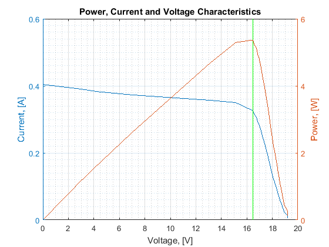

MATLAB script to prove functionality of MPPT algorithm
Authors: Andrew Flynn, Ben Beauregard, Johnathan Adams
This script attempts to imulate the functionality of the maximum power point tracking algorithm built in C for use with the projects hardware. This is meant as a proof that the concept is sound and the algorithm will track theoretical and actual maximum power point data, not as an actual implementation to run on the hardware. As such, certain things are abstracted, such as duty cycle setting and tracking, ISRs, and other MCU-specific functionality.
Contents
Flynn's Code to load Experimental Data
We're just calling another script here. It reads a data file in a terribly... unintuitive way, but it does work, and if it ain't broke...
clear; fid = fopen('SolarSweepData.txt', 'r') ; % Open source file. if fid == -1 disp('ERROR 404: File Not Found') ; else fgetl(fid) ; % Read/discard line. fgetl(fid) ; % Read/discard line. buffer = fread(fid, Inf) ; % Read rest of the file. fclose(fid); fid = fopen('_temp.txt', 'w') ; % Open destination file. fwrite(fid, buffer) ; % Save to file. fclose(fid) ; A = tdfread('_temp.txt') ; delete('_temp.txt') ; end
Data-Error Check
If we have more voltage samples than current samples something is wrong and should probably be fixed before the simulation is continued.
if length(A.Voltage_0x5BV0x5D) ~= length(A.x0x23_Current_0x5BA0x5D) disp('Sample Size Mismatch. What are you doing?') else IV = [A.Voltage_0x5BV0x5D.'; A.x0x23_Current_0x5BA0x5D.']; end
Ben's MPPT Algorithm
The "Sweep" Algorithm runs continuously in a loop using ISR's that call eachother. This shows only one complete sweep of the data, as all subsequent sweeps of identical data will give identical results.
max_power = 0; % Holds Max Power Value max_power_ind = 0; % Emulates Duty-Cycle tracking power = 0; % Holds power value for ind = 1; % Array Index, emulates MCU duty cycle tracking current_sample = 0; % Current Sample Variable for readibility voltage_sample = 0; % Voltage Sample Variable for readibility while ind < length(IV) % Read in samples from ADC current_sample = IV(2,ind); voltage_sample = IV(1,ind); power = current_sample * voltage_sample; % If the current sample is higher than the previous maximum power % point, save it. if power > max_power max_power = power; max_power_ind = ind; end % Increase Duty Cycle/Index ind = ind + 1; end
Graph data
This is a wall of nonsense that I promise you works just fine and you don't have to waste your time reading.
% Here, we display consice numerical results. The wierdness comes from % trying to stay under 80 characters per line. disp(['The calculated maximum power was ',num2str(max_power)]); str = 'The maximum power point was at index '; st = ' of '; disp([str,num2str(max_power_ind),st,num2str(length(A.Voltage_0x5BV0x5D))]); str = 'The theoretical duty cycle is '; st = ' percent'; disp([str,num2str(100*max_power_ind/length(A.Voltage_0x5BV0x5D)),st]); % Too complex half-shared axis multiple y-scale plotting % Mostly because of MATLAB 2015... (As opposed to 2016) x = A.Voltage_0x5BV0x5D; y1 = A.x0x23_Current_0x5BA0x5D; y2 = A.Voltage_0x5BV0x5D.*A.x0x23_Current_0x5BA0x5D; [hAx,hLine1,hLine2] = plotyy(x,y1,x,y2); title('Power, Current and Voltage Characteristics') xlabel('Voltage, [V]') ylabel(hAx(1),'Current, [A]') % left y-axis ylabel(hAx(2),'Power, [W]') % right y-axis hLine1.LineStyle = '-'; hLine2.LineStyle = '-'; hold on; v = IV(1,max_power_ind); plot([v v], [0 max_power],'Color',[0 1 0]); grid on; grid minor;
The calculated maximum power was 5.3695 The maximum power point was at index 30 of 36 The theoretical duty cycle is 83.3333 percent